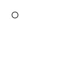
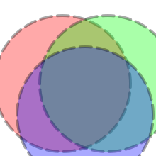
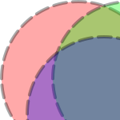
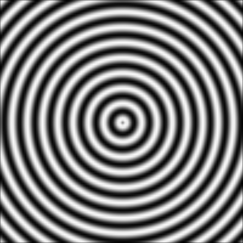

4.8 Resizing
函数
(flomap-copy fm x-start y-start x-end y-end) → flomap
fm : flomap x-start : Integer y-start : Integer x-end : Integer y-end : Integer
The interval arguments may identify a rectangle with points outside the bounds of fm. In this case, the points’ values in the returned flomap are 0.0, as per the Conceptual Model.
This function is guaranteed to return a copy.
Use subflomap instead of flomap-copy when programming functionally. Every library function that returns parts of a flomap (such as flomap-trim and flomap-inset) is defined using subflomap.
函数
(flomap-trim fm [alpha?]) → flomap
fm : flomap alpha? : Boolean = #t
This function cannot return a larger flomap.
> (define small-circle-fm (draw-flomap (λ (fm-dc) (send fm-dc draw-ellipse 20 20 10 10)) 100 100)) > (flomap->bitmap small-circle-fm) 
> (flomap->bitmap (flomap-trim small-circle-fm))
函数
(flomap-inset fm amt) → flomap
fm : flomap amt : Integer (flomap-inset fm h-amt v-amt) → flomap fm : flomap h-amt : Integer v-amt : Integer (flomap-inset fm l-amt t-amt r-amt b-amt) → flomap fm : flomap l-amt : Integer t-amt : Integer r-amt : Integer b-amt : Integer
> (flomap->bitmap (flomap-inset fm -10 20 -30 -40)) 
函数
(flomap-crop fm w h left-frac top-frac) → flomap
fm : flomap w : Integer h : Integer left-frac : Real top-frac : Real
You will most likely want to use one of the following cropping functions instead, which are defined using flomap-crop.
函数
(flomap-lt-crop fm w h) → flomap
fm : flomap w : Integer h : Integer
函数
(flomap-lc-crop fm w h) → flomap
fm : flomap w : Integer h : Integer
函数
(flomap-lb-crop fm w h) → flomap
fm : flomap w : Integer h : Integer
函数
(flomap-ct-crop fm w h) → flomap
fm : flomap w : Integer h : Integer
函数
(flomap-cc-crop fm w h) → flomap
fm : flomap w : Integer h : Integer
函数
(flomap-cb-crop fm w h) → flomap
fm : flomap w : Integer h : Integer
函数
(flomap-rt-crop fm w h) → flomap
fm : flomap w : Integer h : Integer
函数
(flomap-rc-crop fm w h) → flomap
fm : flomap w : Integer h : Integer
函数
(flomap-rb-crop fm w h) → flomap
fm : flomap w : Integer h : Integer
> (flomap->bitmap (flomap-lt-crop fm 150 150)) 
函数
(flomap-scale fm x-scale [y-scale]) → flomap
fm : flomap x-scale : Real y-scale : Real = x-scale
> (flomap->bitmap (flomap-scale fm 1/8)) > (flomap->bitmap (flomap-scale sine-fm 4)) 
> (flomap-scale fm 0) (flomap (flvector) 4 0 0)
> (flomap->bitmap (flomap-resize fm 50 #f)) > (flomap->bitmap (flomap-resize fm #f 50)) > (flomap->bitmap (flomap-resize fm 20 50)) > (flomap-resize fm 0 0) (flomap (flvector) 4 0 0)